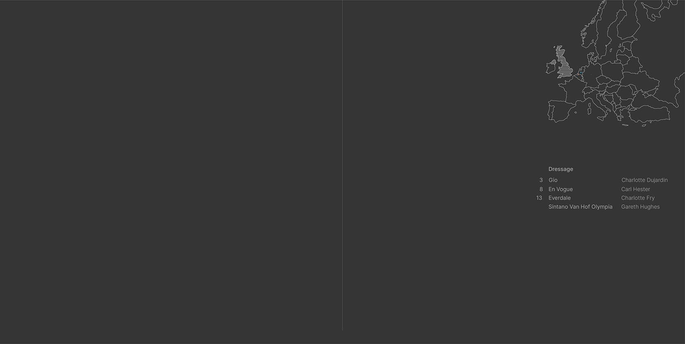
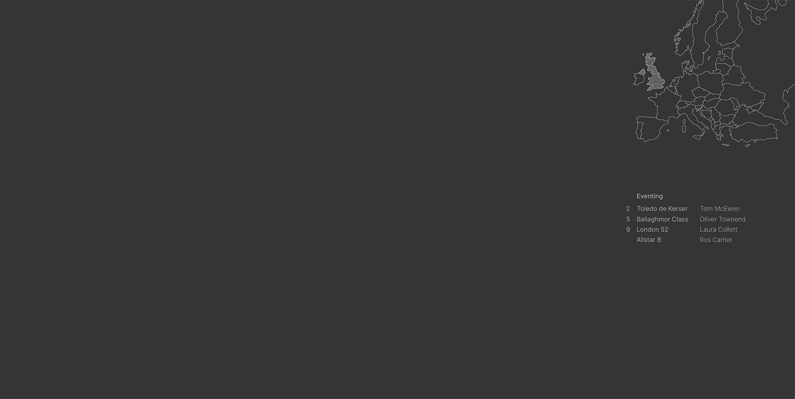
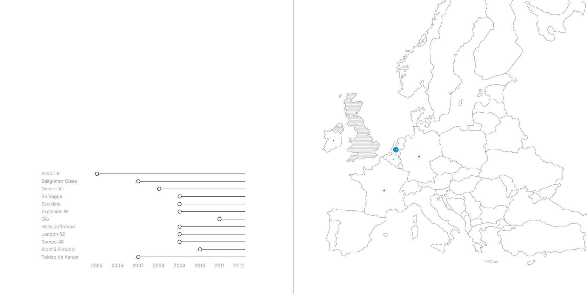

Back to Square One
Time and Space Infographic
Home
Website Redesign
App Design
Letter Number Combination
PSAID
Martin Luther King, Jr. Committee
Charlie's Cafe
Responsive Layout
Program Website
Non-Digital Visualization Attempts
  
First Website Attempts
Final
Click here to view the prototype!